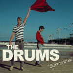

The Drums Summertime!
(Twenty Seven)
When did summer become such a bummer? Any indie movie with the words “summer” or “sunshine” in the title – (500) Days of Summer, Little Miss Sunshine, and Sunshine Cleaning being the most obvious examples – is almost guaranteed to depict its own brand of longing and heartbreak amid the laughs and before the redemption. In pop music it seems like it's been this way for a long time, though it's unlikely to catch anyone crying while riding the pipeline. Even after The Beach Boys caught that wave that took them to "the top of the world," they could get serious, and Brian Wilson composed music to fit such melancholy lines as, "I may not always love you, but long as there are stars above you, you need not ever doubt it. I'll make you so sure about it." Put that in an anniversary card, guys, and see how your significant other reacts.
Compare the mood of Wilson's gem to the refrain of Saddest Summer, the first track from Summertime!, the debut EP from New York four-piece The Drums: “Summer’s just beginning, baby. I might learn to hate you, lady. One week and you’re acting crazy. I might have to hate you, baby. This ain’t what I thought it would be. This is the saddest summer ever.” It's too much to put this band on the level of The Beach Boys, of course, but with the music bouncing giddily in the background, listening to that fantastic chorus is like chasing an upper with a downer, like applying the brakes while slamming on the gas. Believe it or not, this makes for quite a party and makes The Drums seem almost too cool.
The music – the rollicking bass, the jittery single-note guitar line, the bright vocals – all make for the soundtrack for a beach bonfire where the partiers attend despite their girl problems. "If you've got a girlfriend, go kiss her. If you've got a boyfriend, go kiss him," vocalist Jonathan Pierce sings as if doling out advice after he mistakenly took some lover for granted. The over-exuberance indicates deep sadness, the way anti-folk underground hero Paul Baribeau does on Ten Things: "Because right now all you have is time, time, time; but someday that time will run out. That's the only thing you can be absolutely certain about." That exclamation point on the end of the EP's title should probably be a question mark, or maybe just an ellipsis. Almost symbolically, the first track ends both in literal fireworks and the sounds of a sax man playing under a bridge. Wistful and ecstatic, it's a summer album for the guys and girls who don’t catch the waves but still want to get to the top of the world. It’s surf rock without the suntan, eighties post-punk in board shorts. This contradiction is part of The Drums’s goofy appeal.
That's not to say these four guys are not having the time of their lives. The point of Let’s Go Surfing is about as simple as the title suggests. Other than the final verse that barely hints at melancholy (“Remember when I was so very hopeless? Darling, he’s gonna make it all better.”), it’s both a love story and a song about a child beach bum with ADD. “Oh mama, I don’t care about nothing,” Pierce sings over a bass line that chugs along at the speed of a WaveRunner.
That's not to say these four guys are not having the time of their lives. The point of Let’s Go Surfing is about as simple as the title suggests. Other than the final verse that barely hints at melancholy (“Remember when I was so very hopeless? Darling, he’s gonna make it all better.”), it’s both a love story and a song about a child beach bum with ADD. “Oh mama, I don’t care about nothing,” Pierce sings over a bass line that chugs along at the speed of a WaveRunner.
The tunes owe a massive debt to the sixties, and not the druggy sixties that technically began closer to 1964, but the part of the decade that gave rise to bands like The Trashmen. Make You Mine has a sixties pop sensibility and even features a backing vocalist echoing the lines of the chorus in a birdlike falsetto. Simultaneously, the influence of The Cure and R.E.M. is strongly felt, especially in the guitarists’ tendency to lay on the thick chorus effect. If axe man Jacob Graham can play more than one note at a time, he doesn’t show it on Summertime!, but he and second guitarist Adam Kessler work together like two knobs on an Etch-A-Sketch and their slight gothic rock influence darkens the sound.
Don’t Be a Jerk, Jonny is a typical self-pitying ballad of unrequited love with a twist: the objects of his affection get to have their say. As he whines that his stalker-like obsession is “out of love,” the girls answer, “No it’s not! No it's not!” and, in the chorus, implore him to get a grip: “Don’t be so cruel to me.” The song works better than most of its type and brings to mind a scenario in which the girl subject of Every Breath You Take gets someone to hand Sting a restraining order.
If anything, the studio work is too stripped down. The production exposes the young band’s flaws like a barely-there bikini and everything from the guitars to the saxophones repeating the chorus on the opener could use much more punch. It’s sometimes almost impossible to detect the bass, and that depletes the songs of much of their momentum. Nothing here matches the drive of their ridiculously catchy single I Felt Stupid, and Pierce’s possible attempts to channel Gene Chandler (of Duke of Earl fame) on Down By the Water end the album on a headache. Still, The Drums outperform Girls - another band heavily influenced by early sixties nostalgia - on just about every level even without the cult background, and that is certainly enough to get people hyped for next summer and a full-length effort.
13 December, 2009 - 22:01 — Ryan Faughnder